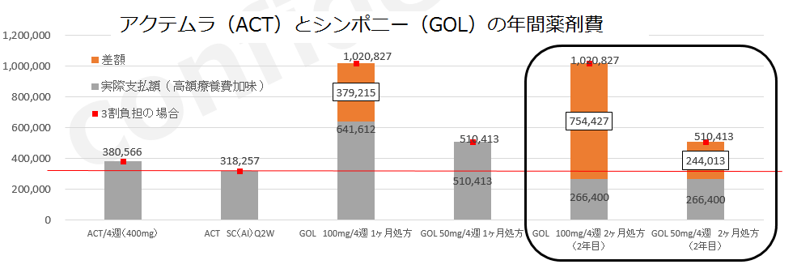

８．SIMは高額医療費制度が該当します

- ●SIMは2018年4月からRAで在宅自己注射が可能となる
- →今まで該当しなかったSIM50㎎であっても、2ヶ月処方すれば高額療養費制度が該当することになる。
- →今まで該当していた100㎎でも、2ヶ月処方した場合にはさらに自己負担は減る

- ・確かにSIMは高額療養費制度がご使用いただけます。しかし、ACT-SCはSIM（通院）で高額療養費制度を使用した場合よりも、さらに安価に治療が可能です。
- ・また、2ヵ月処方で患者さん負担は軽減されますがSIM100㎎の場合、75万円が国及び地方の負担金となり日本の医療費を圧迫します。安価で有効性が高いACTをまずご検討ください。
